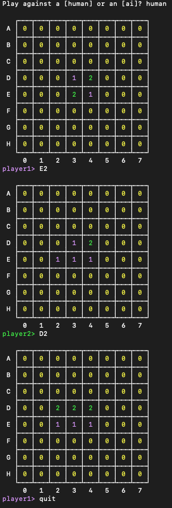

[ADVANCED] Othello Assignment
GERNERAL
This semester you have to program a simple game (othello) in python3 (see here how to install python)
The following list under Assignment tasks gives you instructions to create step by step (starting by 1 you should complete each task one by one) a playable game. We are giving you a template which could be used and gives you an easier start.
Assignment requirements
- The game has to be written in python3 in one single .py file. You are not allowed to execute other files
or use packages within your code (basic python).Submission: done in TeachCenter by >>latest<<
Sunday, 1st December 2019 23:55 (MESZ). You can not work with a partner.
- Code copied from the internet is generally not allowed and should not be required. If you really have to include some foreign code, make it clearly visible which lines are from whatever source.
- Plagiarism will not be tolerated and leads to a negative course grading and an entry in TUG online.
- Your file has to start with three comment lines according to the given template file.
Assignment tasks (10 points for each first level list item)
- Let’s start with a stone
- Look at the code provided and make yourself familiar.
- Create a function to set a stone to one field.
- Print the updated board to the console.
- It’s your turn - keyboard time
- At this point of the assignment we want to be able to play the game with our keyboard. The game should be played one player after one, so starting by asking where to put the first black stone, print the whole field to the console accordingly, asking where to put the first white, and so on.
- Coordinates are defined by row (A-H)[only upper case] and column (0-7), e.g. A0.
PROMPT_PLAYER_1andPROMPT_PLAYER_2are shown on a rotating basis depending on the current player. (see screenshots at the end of the page)- Error detection and handling - What can go wrong?:
- Detect errors like when a player tries to occupy an already full field. What if a cat runs across your keyboard, does your game crash? Make sure the player order is fair and nobody takes two turns. Don't allow drawing outside the board.
ERROR_INVALID_INPUTmust be printed if the input is not as expectedERROR_OCCUPIEDmust be printed if the field is already full.- Color changing times
- Have a look at https://de.wikipedia.org/wiki/Othello_(Spiel) and make yourself familiar to the game rules.
- If your placed stone enclose an opposing stone with one of your stones, the the opposing stone is now yours.
- Check after every time a stone is played if the new placed stone is able to change the color of an opposing stone.
- Stones that just changed its color are not included in the enclosure rule. (else every possible stone would be turned)
- Rules… Rules… Rules…
- The start of the game is defined by four stones in the center. Let’s start every game like that.
- In Othello you are only allowed to put your stone in a field next to an opposing stone (vertical, horizontal, diagonal), if you are able to change the color from minimum one opposing stone.
- Check before the stone is placed, if the selected field is currently allowed.
- If so, draw the stone and check for color changing events.
- If not, make sure the user knows it is not allowed to put the stone there and the player is able to select another field.
- Since sometimes the player is not able to play a valid turn, enable the player to “skip” the turn.
- If the player want's to play an illegal field in terms of the rules, print
ERROR_NOT_ALLOWED - If any error occurs, the previous prompt should be asked again. (In the whole game)
- Winning, the Art of loosing at Loosing
- If both player pass the turn (both are not able to play a valid move) or every field is set, count the stones. The player with more stones on the board wins, if they are equal it’s a draw. Make sure the player is informed the game is over and who has won (or if it’s a draw [both players have kinda lost])
- Statistics and won message
- Print at the end of the game the statistics of the game in two lines (see figure)
- After the two statistic lines print the game result (
WON_PLAYER_1,WON_PLAYER_2orWON_DRAW) - Exit codes
- If player 1 has won, exit the program with exit code 1
- If player 2 has won, exit the program with exit code 2
- If it's a draw, exit the program with exit code 3
- When the player enters 'quit' the program should stop without any other print and return exit code 0. No statistics should be displayed!
- Oh, we have a computer
- Since we play the game on a computer, let’s program a computer opponent.
- Start with a simple strategy, computer wants to put the stone to a random field that is allowed.
- Print
PROMPT_HUMAN_AIat the beginning. If a string equal to INPUT_HUMAN is given, 2 humans are playing, if a string equal to INPUT_COMPUTER is given, player 1 is human, player 2 is the computer. - If the input is not equal to ether INPUT_HUMAN or INPUT_COMPUTER,
print
ERROR_INVALID_INPUTand print the promptPROMPT_HUMAN_AIagain. - Print instead of
PROMPT_PLAYER_2;PROMPT_PLAYER_AIand the selected coordinates of the ai. (see screenshots at the end of the page) - Aaaaand mankind is lost, the computer takes over the world…
- Analyse every field possible playing and rate how many stones are flipped in this move. The computer plays the field which flipps the most stones.
- If you program an ever better strategy, bonus points will be rewarded.
Game images
(colors may vary depending on your operating system, if you don't change the STATIC STRINGS -
DO NOT CHANGE section it should be fine)
human game:

ai game:

game won